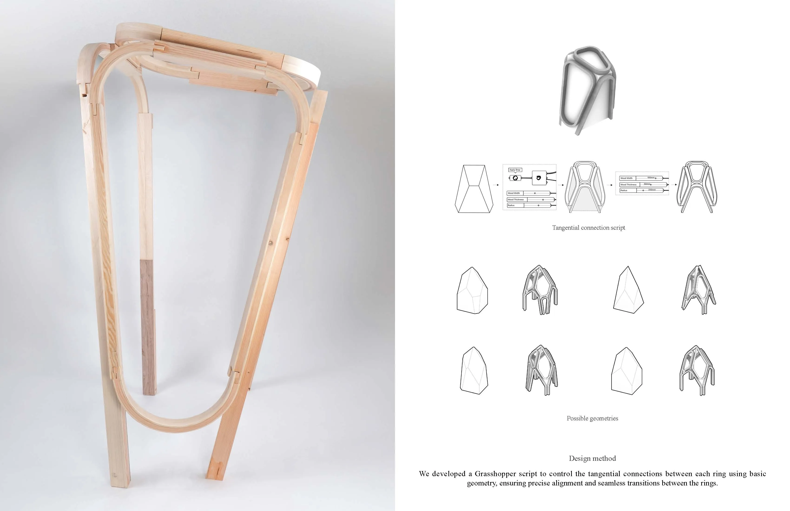
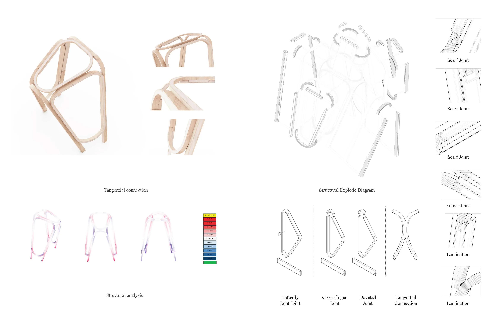
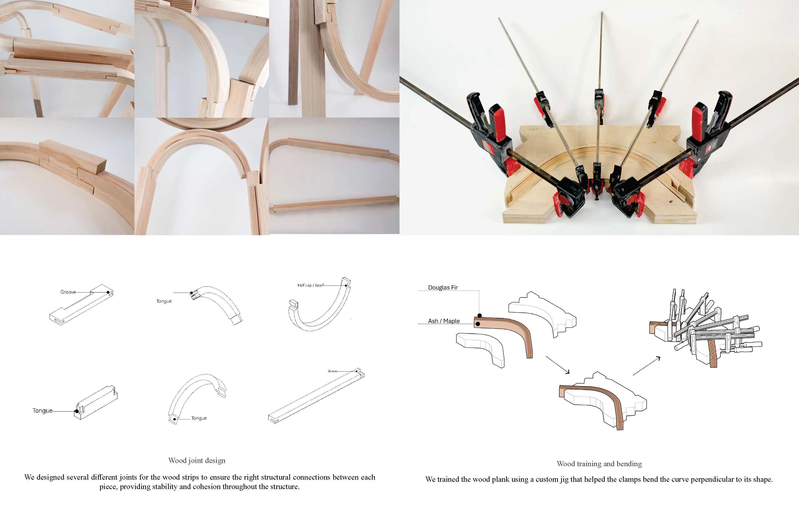
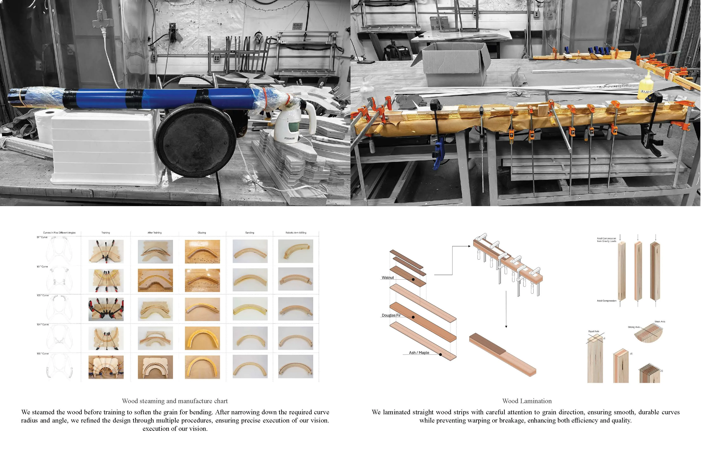
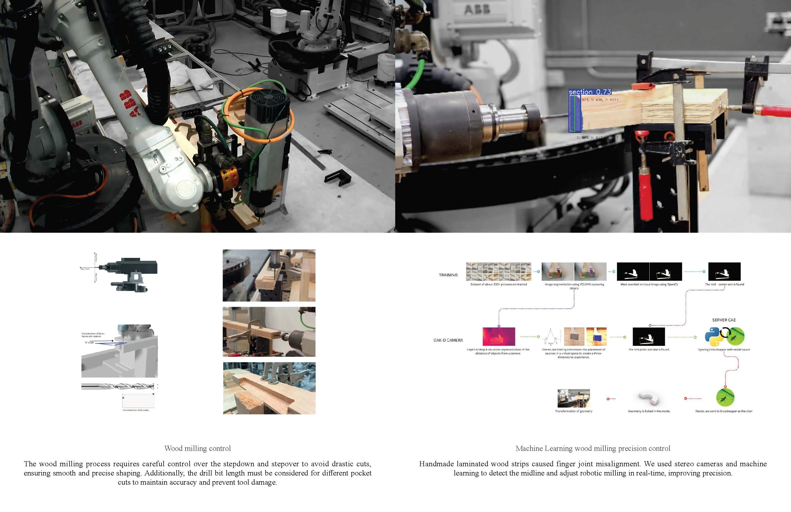
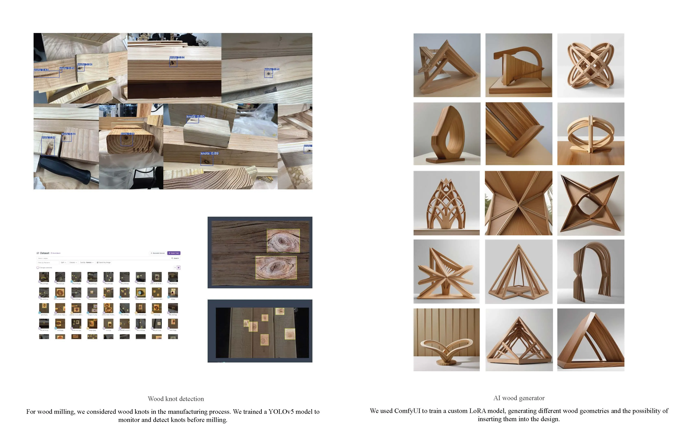

Timber Lamination Structure-Robotic Wood Milling

Project Overview
The project focuses on the creation of curved timber forms through a technique known as wood strip lamination, where thin layers of wood are bonded together to achieve the desired curvature. Robotic milling is employed to create precise tectonic connections between each piece, ensuring structural integrity and cohesion. Additionally, a machine learning system is integrated to enhance milling precision, optimizing the fabrication process for greater accuracy and consistency.
Technical Data
- Status: Robotic Fabrication
- Collaborator:Huiyang Gong, Carina Joseph, Freda Odonye
- Tools: Rhino, Grasshopper,Python
- Typology:Robotic Fabrication





